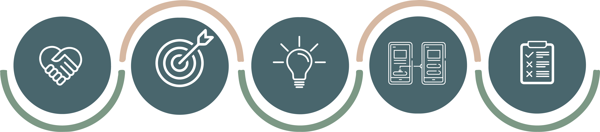
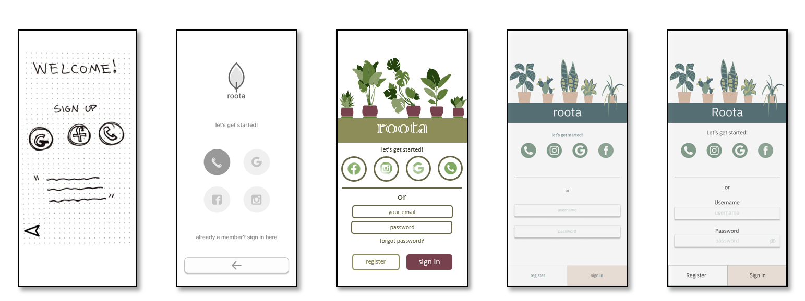

Ann app that connects wyou with local plant experts, experts in your personal network, and guides you through providing your plants with a healthy havitat
Overview
Roota is a plant-care app that connects users to local plant experts to help provide a thriving environment for their plants. This app gives users the opportunity to ask questions, attend local plant shop classes, purchase plants, and share information within their local and personal networks.
My Role
UX Designer (User Research)
Information Architecture
Interaction
Usability Testing, UI)
Type
Plant Care App Concept
Project Duration
July 2021 - March 2022
Problem Statement
Roota users need access to online plant experts and local plant shops to purchase, maintain, and provide a healthy environment for their plants to thrive. We will know this to be true when users can effectively reach out to experts and their local shops to purchase and get advice on ways to nourish their plants.
Tools
Optimal Workshop (Card Sorting)
Balsamiq (Low-Fidelity Wireframes)
UsabilityHub (A/B Testing)
Lookback(User Testing & Usability Testing)
Figma (High Fidelity Wireframes & Prototype)
Design Process

Comeptivie Analysis
User Interviews
Research Goals
I would need to know how much time people would like to dedicate to maintaining plants and does this dictate which plants to buy.
I need to know if there is an interest in buying new plants or are users comfortable with the amount they have.
I need to know if there is an advantage to meeting with experts in person or do they prefer online support.
I need to know what motivates users to purchase plants and why they are willing to put in the work to give them a thriving environment.
I need to know if users have any interest in using their skills to volunteer.
Interviewees
Results
Interviews were 20-30 minutes long and were completed via Facetime
I found that all users were motivated to give their plants a thriving environment because they valued the aesthetic and atmosphere of having plants. Their energy levels and happiness increased with plants around.
I learned about the skill level of each user. Some were very experienced with plant maintenance while others could barely keep one plant alive.
I found that the time it took to maintain a plant per week really dictated which plants they bought. Even if users had more time to give, they preferred plants with low maintenance or plants that could line up on the same watering schedule.
While users wouldn’t mind taking in person classes, they really liked the idea of getting online advice from experts. With the pandemic many people have become accustomed to a lot of their daily interactions being online if it is possible.
All interviewees were interested in volunteering at a garden
Takeaways
Maintenance time dictates plant purchases
Online support is more welcomed due to the pandemic conditioning them
Users have different experience keeping plants alive
All users have the same motivation, but might lack the same time
All users are open to volunteer
All users would prefer to support local shops than a large franchise
More plants are always wanted, but need to line up with the schedule of their existing plants
Affinity Mapping
While users would like to support local shops, they want quick consultations with experts
If more time is needed, they are willing to go into shops
Advice on what plants to buy for their specific environment is needed. Weather is be for pets or light exposure.
Maintenance time dictates purchases
All users want to volunteer, but want it to be easily accessible without a lot of research
Skill levels vary, but all users are interested in learning more about how to give their plants a thriving environment
Plants give users an energy that they enjoy coming home to everyday. They are motivated to give their plants a healthy life to give themselves a healthy home
Reminders are needed for watering, repotting, light exposure
More plants are always wanted, but users would need more space
Results
While users would like to support local shops, they want quick consultations with experts
OnIf more time is needed, they are willing to go into shops
Advice on what plants to buy for their specific environment is needed. Weather is be for pets or light exposure.
Maintenance time dictates purchases
All users want to volunteer, but want it to be easily accessible without a lot of research
Skill levels vary, but all users are interested in learning more about how to give their plants a thriving environment
Plants give users an energy that they enjoy coming home to everyday. They are motivated to give their plants a healthy life to give themselves a healthy home
Reminders are needed for watering, repotting, light exposure
More plants are always wanted, but users would need more space
User Personas
User Flows
Usability Testing
Goals
The goal of this study is to test the usability of Roota’s core functions and to identify potential navigation problems. With participant feedback I hope to learn any design improvements the prototype might need.
Testing Objectives
Measure how quickly users navigate through Onboarding and Sign Up/Login
Observe how users interact with the introduction video
Test how long it takes for users to complete a new task
Identify any difficulties in the initial onboarding and daily tasks the user comes across
Methodology
This test will consist of Moderated Remote Testing.
Participants will be given a video introduction that will provide a general overview of Roota and the purpose of their participation in the usability test.
I will guide everyone through each task and will finish with a final debrief.
Participants
The test plan will consist of 6 participants within my personal network of family and friends.
The core features will be assessed during this test, so the need for participants who are interested in plant care is not necessary at this point.
I will be looking for the functionality of the features throughout the app.
Design Process: Low, Mid, & High-Fidelity Screens

Style Guide
Color Palette
Roota is a plant care app, so naturally green was a main color to reference throughout the design. With the use of different shades of green as well as a coral pop of color, Roota came to life. The Design System and Style Guide further explain the stylistic decisions in detail.